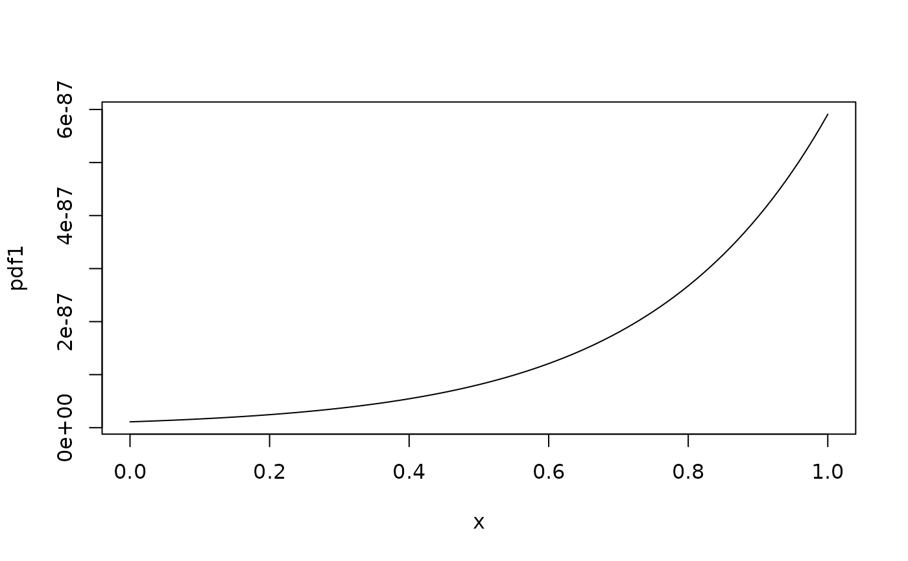
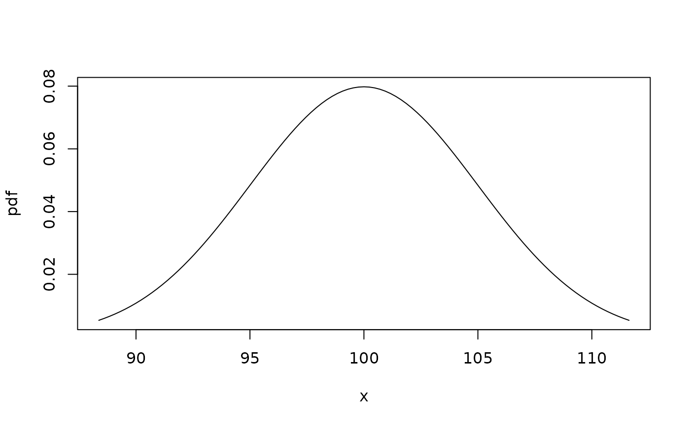
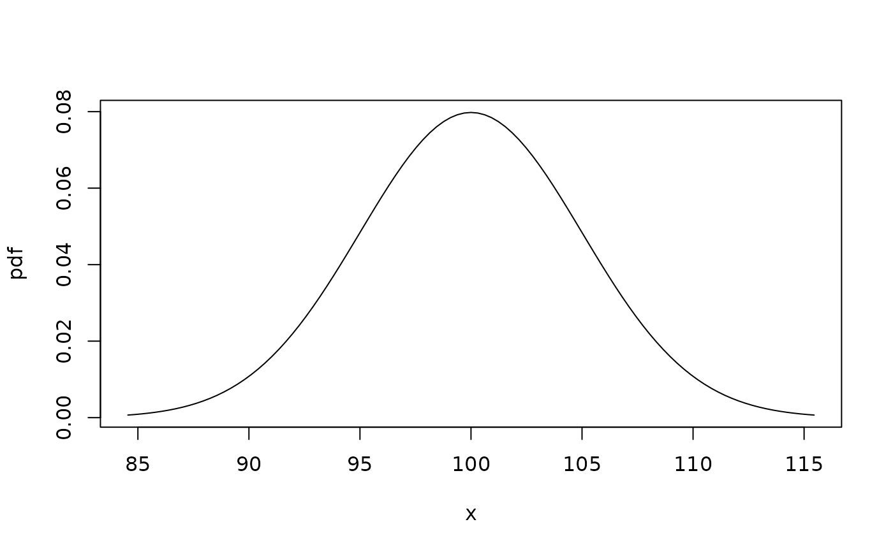
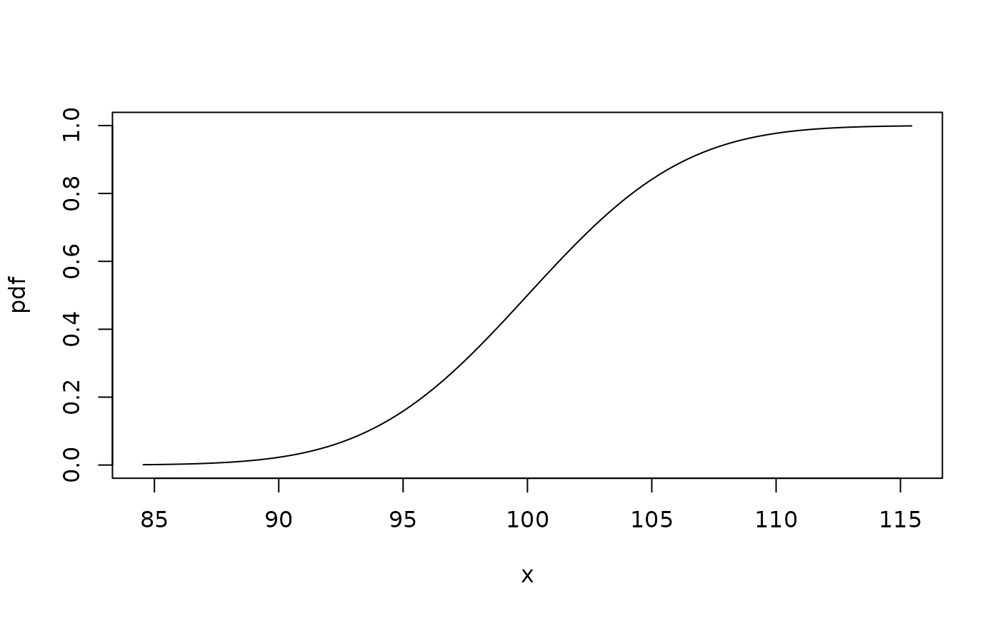

Plot a probability denstity function
plotpdf.RdPlot a probability denstity function with x-axis limits determined by quantiles of the distribution. Quantiles are computed using a quantile function or cumulative distribution function, whichever is supplied.
Arguments
probability density to be plotted, a function.
- qdf
quantile function to be used for computation of quantiles, a function.
- cdf
cumulative distribution function to be used for computation of quantiles, a function. This argument is used if
qdfis not given, see `Details' section.- lq
lower quantile, used in the computation of the left limit.
- uq
upper quantile, used in the computation of the right limit.
- ...
additional arguments to be passed on to the
plotfunction.
Details
The function plots pdf(x) over the interval (xmin,xmax) where
xmin and xmax are the lqth and uqth quantiles,
respectively, of the distribution. The quantile function,
qdf, is used, if supplied. Otherwise the quantiles are computed
numerically from the cdf.
Argument pdf is not required to be a pdf, it may be any
function. For example, the same way of choosing the limits may be
appropriate for a plot of the cdf, see the examples.
Similarly, qdf and cdf need not be related to pdf.
Examples
pdf1 <- function(x) dnorm(x, mean = 100, sd = 5)
qdf1 <- function(x) qnorm(x, mean = 100, sd = 5)
cdf1 <- function(x) pnorm(x, mean = 100, sd = 5)
plot(pdf1) # needs to specify 'from' and 'to' args for meaningful plot

plotpdf(pdf1, qdf1) # using quantile function

plotpdf(pdf1, cdf = cdf1) # using cdf
plotpdf(pdf1, cdf = cdf1, lq = 0.001, uq = 0.999) # ... and non-default quantiles

plotpdf(cdf1, cdf = cdf1, lq = 0.001, uq = 0.999) # plot a cdf

## a mixture distribution:
pf1 <- function(x){
0.25 * pnorm(x, mean = 3, sd = 0.2) + 0.75 * pnorm(x, mean = -1, sd = 0.5)
}
df1 <- function(x){
0.25 * dnorm(x, mean = 3, sd = 0.2) + 0.75 * dnorm(x, mean = -1, sd = 0.5)
}
plotpdf(df1, cdf = pf1) # plot the pdf
plotpdf(pf1, cdf = pf1) # plot the cdf
c(cdf2quantile(0.05, pf1), cdf2quantile(0.95, pf1))
#> [1] -1.750551 3.168325